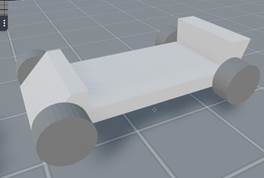

Project for Decentraland
Kart Simulation / Racing Game
Preliminary analysis and concepts
The scene : a 3D track model
Minimum recommended land size: 2x2 parcels (32mx32m), because a smaller size would prevent to have a longer track, and may have too small geometry limits (polygons, textures, altitude, …).
A greater land (2x3, 4x4, or more) would be even better of course.
Multi-floor track design would allow to get a longer track on a limited number of parcels. I estimate a track laid on a 2x2 land (4 parcels) would be about 250m in length (3m/4m width), that’s consistent with the smallest indoor karting tracks in real world.
The Kart:
One kart 3D model, build for the character to get inside (jump into).

a very basic draft of a kart model (just for illustration, dimensions : 1.0x0.6x0.3)
When added to the scene the kart model comes with invisible structure (colliders) designed to stuck the pilot inside.
Example of colliders in the kart model
To get on the kart, the player can go from behind, climb up the ramp, then he’s falling inside the driving area. When mounted in the kart, the character is stuck (by colliders).
He can still get out the karting by jumping, or we could imagine the colliders to appear/disappear or increase/decrease according to the game events, in order to allow/deny the character to get on/off the kart.
The Driving Experience:
User Control:
Let’s imagine how to drive a vehicle (the kart) with the user controls the Decentraland SDK actually proposes.
Ideally for driving a vehicle, we would need a 2-axis control (1 axis for steering, 1 axis for acceleration/brake), preferably “linear” (not an on/off), at least for steering axis.
Keyboard:
From what I know there are 4 keys (arrows or WASD) used to move the player (camera position) and there are 2 additional keys (E,F) for custom commands.
As the player is stuck, the directional arrows are useless. But I don’t know if there would be a way to reroute the key events in order to control moving of the kart instead of the camera …
Camera:
Once the player is stuck in the karting, he can’t move anymore (key arrows has no effect) but he can still move his line of sight in 2 dimensions by moving the mouse pointer (that actually controls the camera orientation)
Using camera has already been used in a scene to move objects (Decentrablocks, https://decentraland.org/blog/announcements/building-blocks/). This is actually a way the user can control a 2 axis command, linearly, without struggling too much.
So, I think that a similar principle could be used to control the movement of the kart itself. In the real world it would mean a driver would control his car direction and velocity by his sight. Looks great, indeed?
At least, this could control the steering while acceleration and brakes can be controlled by E and F keys (in an on/off way).
To go further:
Furthermore, we could imagine a game controller application on smartphone being connected to the Decentraland game. In that particular case, it would control the kart, but a similar technique could be useful for lots of different game concepts.
Not only by
using a virtual game pad on touch screen, but, much better, using the phone
movements themselves, like the famous Wiimote: as for the Nintendo killer
product, this would give DCL some amazing new user experiences (just imagine a
tennis game, using our own smartphone as a racket).
See https://cord-cutters.gadgethacks.com/how-to/use-your-android-device-as-wiimote-style-controller-play-tennis-your-chromecast-0160917/ for example.
It seems that this project does something in that way: https://github.com/konaraddi/web-riimote
The Driving Model:
As a simulation game, the kart needs to respect some realistic behavior taking into account the physical laws (engine power, brakes power, inertia, centrifugal force, tire adherence), usage (tire wear), road conditions (temperature, materials, wetting, slopes) and their influence on trajectory, hence the velocity of the vehicle and the driver’s performance.
However, the collision with the track’s limits shall be managed, in order to:
- Prevent the player to drive outside the track
- Slow down / deviate the kart when colliding with the limits, regarding the angle, velocity, etc.
Gameplay:
Time trial:
The player tries to drive the fastest as possible, regarding the limits given by the driving model and regarding the road condition.
A display (3D entity in the scene and/or UI indicator) gives him the time taken for his last laps, so that he has feedback and can improve his driving lap after lap.
Racing:
Driving alone on the track is a thing, but competing a race is a much better experience.
So, we’ll put several karts driving on the track, either control by ‘IA’ (a basic model would fit IMHO), for sole-player, or (better choice) controlled by other players, using a multi-player feature as proposed in the SDK (message bus or dedicated server relay).
This mode of course requires to manage collision between karts.
Scores
The blockchain integration in DCL let us the opportunity to use Ethereum, for instance, to record the best scores of all players.
Game Economy
It’s a bit early to say but some opportunity can be pointed out.
Track Builder
Let the land owner build his own track from building-blocks. Such blocks could be bought/exchanged (in MANA) in the DCL marketplace (as fungible items).
Kart rental
Like in real life, you come on the track and you drive a kart that is rent to you from the land owner.
Parts Store
If the vehicle model simulates wear and tears of tires, brakes, and so on, then the kart itself need to be maintained regularly and some parts changed. They could be sold on the marketplace as well.
BYOK
Let each player to own his kart, as an NFT, make some specific designs (ads, eventually), tuning pieces for look and/or performances purpose (aerodynamics)
So, as if there are different tracks across DCL, built/owned by different land owners, the player can bring his own kart and race with it, like in real life.
Statement of Work (delivery schedule and content)
Release v1, delivered on 15/02/2020 at the latest.
Incremental releases would be delivered before to show progress and get feedback ASAP.
Detailed content of the release v1:
- One track 3D model on a 2x2 or 2x3 LAND, based on segments (building blocks), allowing to create new tracks in future
- The scene also includes a display indicator to show the last laps time of each player.
- 4 kart 3D models
- The driving model:
o User control based on camera movement plus E,F keys:
§ Steering according to the camera orientation (Y axis)
§ E key: accelerate
§ F key: brake
o Dynamics:
§ Acceleration,
§ Braking,
§ Steering,
§ Mass (effective in slopes),
§ Collision with track limits,
§ Centrifugal forces (inertias),
§ Tire adherence limits: drift, trajectory impacts, spin/oversteer
o Sound:
§ Engine sound, modulated according to acceleration
§ Tires sounds when drifting
- Game-play:
o The track includes a pick up/drop off area where the available karts are parked
o The player can choose an available kart are get in it from the back
o The other karts can be driven by other players (multi-player mode).
o After each lap, the time of each player is shown on the track display indicator
- Model limitations:
o No suspension (as most real karts)
o No gearbox (as basic karts)
o No collision between karts
o Multiplayer features may suffer from latency (i.e. position of other players may have some delays)